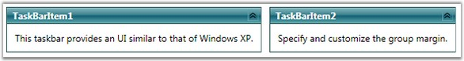

TaskBar control is placed horizontally or vertically by using the GroupOrientation property. This is a dependency property, which sets the orientation of the TaskBar.
TaskBar control supports the following types of orientation.
· Horizontal–TaskBar Items in the TaskBar are placed horizontally
· Vertical–TaskBar Items in the TaskBar are placed vertically
Use the below code snippet to set the orientation.
|
[XAML]
<!-- Adding TaskBar that have group orientation as horizontal --> <syncfusion:TaskBar Name="taskBar" GroupMargin="5" GroupOrientation="Horizontal">
<!-- Adding TaskBarItem --> <syncfusion:TaskBarItem Name="taskBarItem1" Header="TaskBarItem1">
<!-- Adding content to TaskBarItem --> <StackPanel Margin="10" HorizontalAlignment="Center" VerticalAlignment="Stretch"> <TextBlock TextWrapping="Wrap"> This taskbar provides an UI similar to that of Windows XP.</TextBlock> </StackPanel> </syncfusion:TaskBarItem>
<!-- Adding TaskBarItem --> <syncfusion:TaskBarItem Name="taskBarItem2" Header="TaskBarItem2">
<!-- Adding content to TaskBarItem --> <StackPanel Margin="10" HorizontalAlignment="Center" VerticalAlignment="Stretch"> <TextBlock TextWrapping="Wrap"> Specify and customize the group margin.</TextBlock> </StackPanel> </syncfusion:TaskBarItem> </syncfusion:TaskBar> |
|
[C#]
//Creating an instance for TaskBar TaskBar taskBar = new TaskBar();
//Creating an instance for TaskBarItem TaskBarItem taskBarItem1 = new TaskBarItem();
//Setting the header of TaskBarItem1 taskBarItem1.Header = "TaskBarItem1";
// Creating instance for TextBlock TextBlock textBlock1 = new TextBlock();
// Adding text to textblock textBlock1.Text = "This taskbar provides an UI similar to that of Windows XP.";
// Adding textblock to TaskBarItem taskBarItem1.Items.Add(textBlock1);
//Creating an instance for TaskBarItem TaskBarItem taskBarItem2 = new TaskBarItem();
//Setting the header of TaskBarItem1 taskBarItem2.Header = "TaskBarItem2";
// Creating instance for TextBlock TextBlock textBlock2 = new TextBlock();
// Adding text to textblock textBlock2.Text = "Specify and customize the group margin.";
// Adding textblock to TaskBarItem taskBarItem2.Items.Add(textBlock2);
//Adding the TaskBarItem to TaskBar taskBar.Items.Add(taskBarItem1); taskBar.Items.Add(taskBarItem2);
//setting group orientation to TaskBar taskBar.GroupOrientation = Orientation.Horizontal;
//Adding TaskBar as content of window this.Content = taskBar; |

Figure 1050: GroupOrientation = "Horizontal"
GroupOrientationChanged Event
This event is handled when the GroupOrientation property is changed.
While setting the orientation of the TaskBar, you may want to change the position of the TaskBar for proper alignment. This can be achieved by changing the group margin of the TaskBar along with the orientation.
The following code snippet illustrates handling the GroupOrientationChanged event.
|
[C#]
/// <summary> /// Tasks the bar_ group orientation changed. /// </summary> /// <param name="d">The d.</param> /// <param name="e">The <see cref="System.Windows.DependencyPropertyChangedEventArgs"/> instance containing the event data.</param> private void taskBar_GroupOrientationChanged(DependencyObject d, DependencyPropertyChangedEventArgs e) { if (taskBar.GroupOrientation == Orientation.Horizontal) taskBar.GroupMargin = new Thickness(5, 0, 0, 0); else taskBar.GroupMargin = new Thickness(0, 0, 0, 5); } |